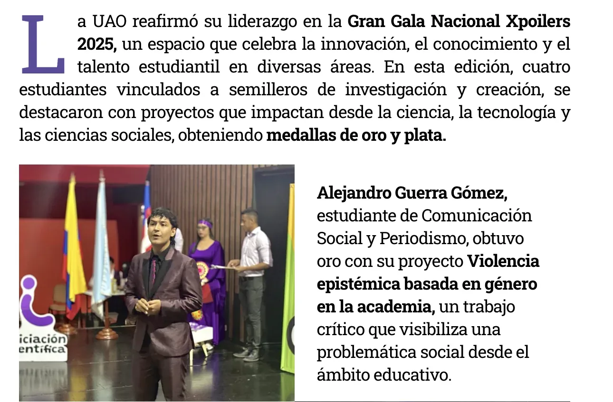

Desde el semillero de investigación en estudios de género de la Universidad Autónoma de Occidente estudié, con entrevistas y etnografía, cómo se manifiesta la violencia epistémica basada en género en la vida académica. Diseñé y ejecuté la metodología para el cruce de información y el resultado de la investigación.
Para que los hallazgos salieran del informe, construí un monólogo como dispositivo narrativo: una forma de contar la investigación que se puede escuchar y discutir.
Dónde se presentó
- Revista Iniciación CientíficaPublicación del trabajo, 2025
- ENISI 2025Ponencia en el XXVIII Encuentro Nacional y XXII Internacional de Semilleros de Investigación, Bogotá
- Coloquio en estudios de géneroBarranquilla
- Conversatorio “¿Dónde está el género en el cuerpo?”Universidad Icesi

Investigación internacional
En 2026 fui asistente de investigación en el Programa Delfín, en un proyecto sobre arte disidente en Latinoamérica: gestión documental, análisis de fuentes, creación de instrumentos de investigación y análisis de los datos.